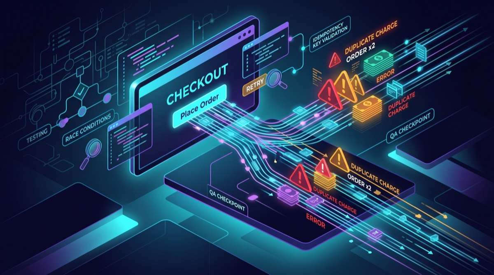

Testiranje dugmeta za ponovni pokušaj: kako uhvatiti duple naplate prije kupaca
Zašto sekvencijalni testovi idempotentnosti propuštaju duple naplate na checkout-u i kako napisati test koji otkriva stvarni race condition.
Kupac dodirne „Place order", ekran se vrti nekoliko sekundi predugo, pa dodirne ponovo. S njegove strane se ne dešava ništa neobično — sve dok mu se na kartici ne pojave dvije naplate umjesto jedne. Ovo je jedan od najčešćih načina na koje greške u plaćanju stignu do produkcije, a ujedno i jedan od najlakših za propustiti u QA-u, jer testovi koji bi trebalo da ga uhvate često prolaze iz pogrešnog razloga. Primjer koji slijedi je ilustrativan: zamislite tim koji objavljuje checkout tok koji je izgledao dobro pokriven testovima, da bi se ispostavilo da zaštita idempotentnosti ima rupu koju može otkriti samo istovremenost.

Scenario
Checkout servis je prilikom kreiranja narudžbe prihvatao Idempotency-Key zaglavlje, po istom obrascu koji koriste Stripe, PayPal i druge platforme za plaćanje: klijent generiše ključ za svaki pokušaj plaćanja, a server bi trebalo da garantuje da ponovljeni zahtjevi sa tim ključem proizvedu najviše jednu narudžbu i jednu naplatu. Na sporoj ili nestabilnoj vezi — prekinuta konekcija, zastoj mobilne mreže, load balancer kojem istekne vrijeme usred zahtjeva — klijent nikako ne može znati da li je originalni zahtjev zaista pao ili samo odgovor nikada nije stigao nazad. Bezbjedan potez za klijenta je da pokuša ponovo sa istim ključem. Posao servera je da taj ponovni pokušaj ne uradi ništa ako je originalni zahtjev već prošao.
Tim je imao test za ovo. Test je slao zahtjev, čekao odgovor, slao potpuno isti zahtjev ponovo i provjeravao da oba odgovora sadrže isti ID narudžbe. Pouzdano je prolazio na CI-ju. Ono što nije testirao jesu dva zahtjeva koja stignu na server toliko blizu jedan drugom da oba vide idempotency ključ kao „još neiskorišćen" prije nego što bilo koji od njih stigne da ga zabilježi.
Zašto test koji prolazi nije dokazivao ono što je izgledalo da dokazuje
Sekvencijalni i istovremeni ponovni pokušaji prolaze kroz potpuno različite putanje u kodu. Sekvencijalni test — zahtjev, čekanje, ponovni pokušaj — uvijek pogodi server tek nakon što je prvi zahtjev već završio i sačuvao svoj rezultat. Proći će čak i ako server uopšte nema zaključavanje ni koordinaciju oko koraka „provjeri ključ, pa upiši", jer nikada ne postoji trenutak u kojem su dva zahtjeva sa istim ključem istovremeno u obradi. A upravo taj trenutak proizvodi dupli dodir, automatski ponovni pokušaj na sporoj mreži ili dvostruko slanje forme na klijentu: dva zahtjeva koja oba iz baze pročitaju „ključ još nije viđen" prije nego što bilo koji od njih upiše svoj rezultat. Oba nastavljaju. Oba naplate karticu.
Kako napisati test koji zaista izaziva race condition
Da biste ovo uhvatili, preklapanje morate namjerno izazvati, umjesto da se nadate da će ga tajming sam proizvesti. Istovremeni black-box test ispali grupu identičnih zahtjeva na isti endpoint sa istim idempotency ključem i provjerava stanje koje je nastalo, a ne samo HTTP odgovore:
const key = crypto.randomUUID();
const attempts = Array.from({ length: 10 }, () =>
request.post('/v1/orders', {
headers: { 'Idempotency-Key': key },
data: orderPayload,
})
);
const responses = await Promise.all(attempts);
// Prava provjera nije nad HTTP odgovorima —
// nego nad onim što je zaista upisano.
const orders = await db.query(
'select id from orders where idempotency_key = $1',
[key]
);
expect(orders.length).toBe(1);Ovdje su bitna dva detalja. Prvo, zahtjevi se šalju zajedno pomoću Promise.all, a ne jedan za drugim — petlja koja čeka svaki odgovor prije slanja sljedećeg zahtjeva samo je sporija verzija sekvencijalnog testa koji je grešku već propustio. Drugo, provjera gleda mjerodavni izvor — tabelu narudžbi ili knjigu plaćanja (ledger) — umjesto da poredi tijela HTTP odgovora. Dva workera mogu napraviti dva odvojena reda u bazi, a da oba i dalje vrate odgovor koji izgleda identično testu koji provjerava samo statusne kodove, pa provjera mora gledati šta je zaista sačuvano, a ne samo šta je vraćeno.
Pokretanje ovakvog testa nad checkout servisom iz prethodnog primjera otkrilo je upravo opisani problem: umjesto jednog ID-a narudžbe ponovljenog deset puta, ledger je pokazao nekoliko različitih narudžbi, svaku sa sopstvenom naplatom, a sve su nastale iz zahtjeva sa istim ključem. Logika „provjeri, pa upiši" nije bila zaštićena ničim što bi spriječilo da dva zahtjeva oba prođu provjeru prije nego što bilo koji od njih završi upis.
Zamke i ograničenja
Ovakvo istovremeno testiranje je bučnije i osjetljivije na okruženje od običnih funkcionalnih testova. Dijeljena staging baza, redovi zahtjeva na load balanceru ili rate limiter mogu upiti nalet zahtjeva prije nego što stigne do putanje koju pokušavate da opteretite, pa dobijete lažni prolaz koji ne govori ništa o ponašanju u produkciji pod stvarnom istovremenošću. Da biste izazvali pravo preklapanje, ponekad vam treba test hook koji pauzira izvršavanje tačno prije trenutka kada se ključ zauzme, što znači dodavanje koda samo za testiranje u produkcione putanje — kompromis za koji je potrebna saglasnost tima, a ne nešto što QA treba da ubaci na svoju ruku. Vrijedi i odoljeti porivu da se doda zaključavanje na klijentu (onemogućavanje dugmeta nakon jednog klika) i da se problem proglasi riješenim: to pomaže u slučaju slučajnog duplog dodira, ali ne radi ništa za klijenta koji legitimno pokušava ponovo nakon stvarnog isteka vremena — a upravo zbog tog slučaja idempotency ključevi i postoje. Na kraju, ovakav test je skup za pokretanje na svakom commitu; mjesto mu je u ciljanom skupu testova koji se pokreće baš nad endpointima za plaćanje i kreiranje narudžbi, a ne kao šablon koji se primjenjuje svuda gdje se upisuje stanje.
Šta dalje
Provjerite koji su vaši testovi idempotentnosti ili zaštite od duplikata zapravo prerušeni sekvencijalni ponovni pokušaji, i one bitne — plaćanje, kreiranje narudžbi, sve što ima posljedicu čije poništavanje košta novca — prepišite kao testove istovremenog naleta pomoću Promise.all ili ekvivalenta u vašem stacku. Provjeravajte stanje baze ili ledgera, a ne HTTP odgovor, jer se race condition tu zaista pokaže. Dodajte test slučaj u kojem se isti ključ ponovo koristi sa izmijenjenim payloadom, jer bi ispravna implementacija to trebalo da odbije, a ne da tiho obradi. A ako vaš API ne dokumentuje šta bi dupli istovremeni zahtjev trebalo da vrati — sačuvani rezultat, 409 ili nešto treće — prvo to zapišite, pa tek onda pišite nove testove, jer bi u suprotnom i test samo nagađao kakav je ugovor.
Kombinuj ovo sa tekstovima Testiranje idempotentnosti i duplih naplata i Load testiranje za QA timove uz k6.